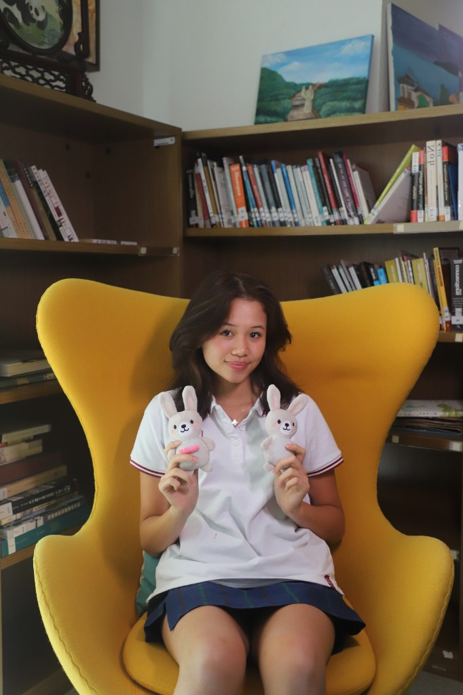
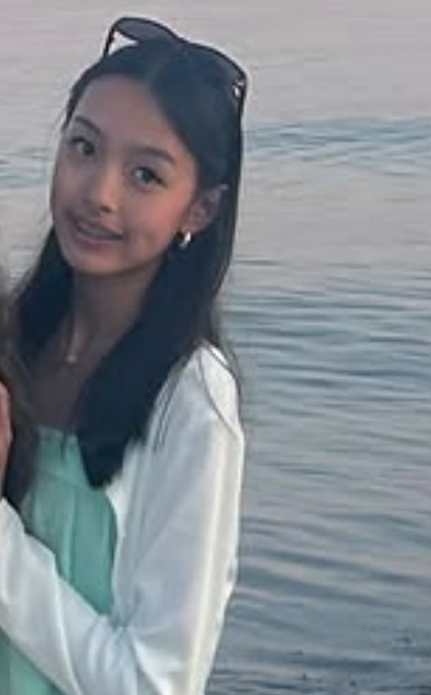
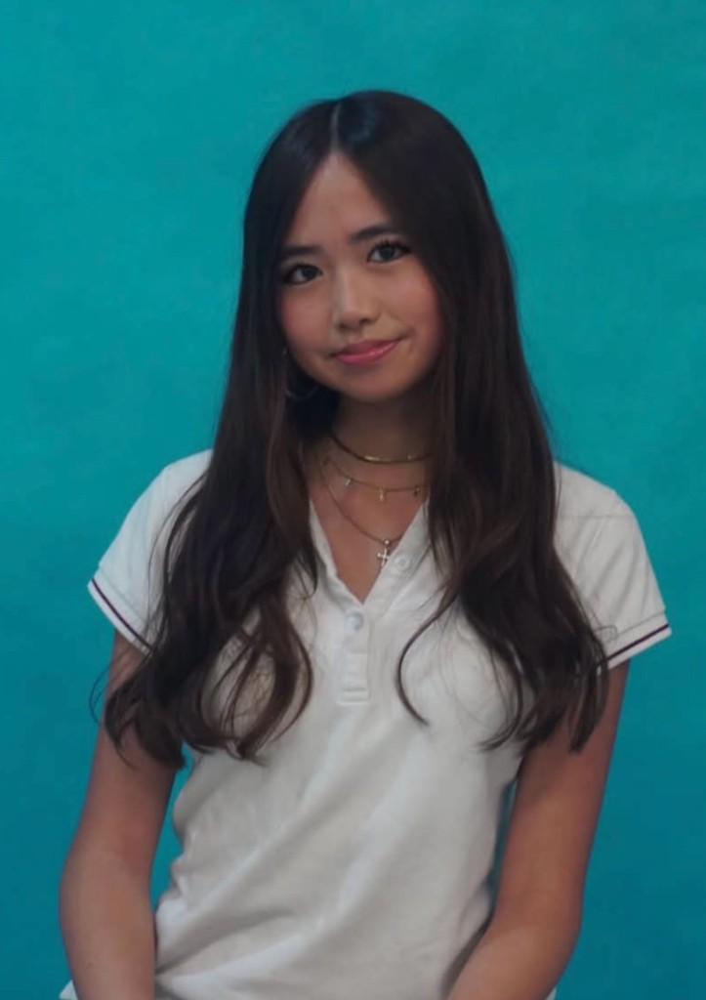
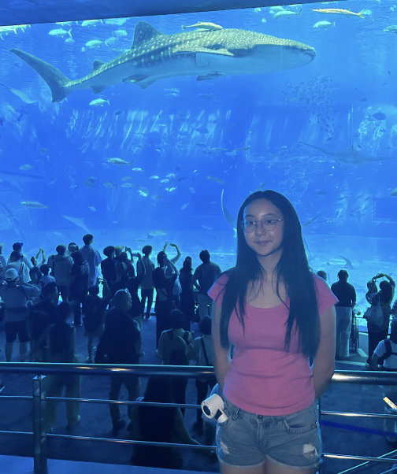
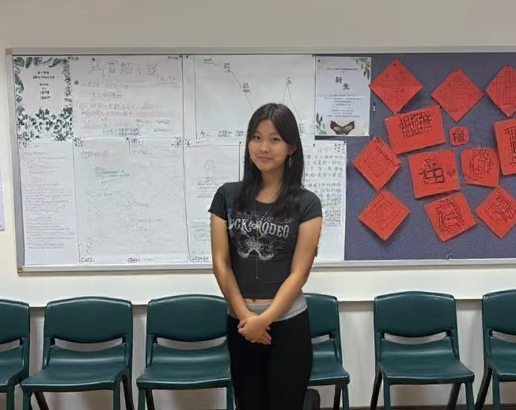
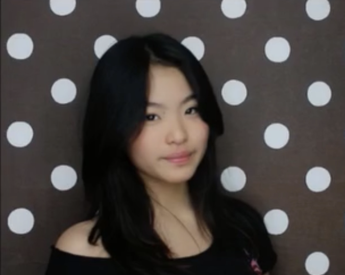
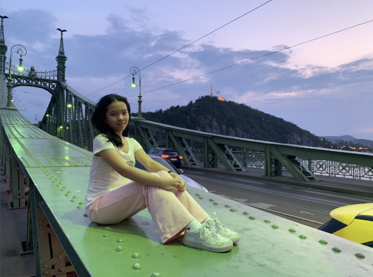
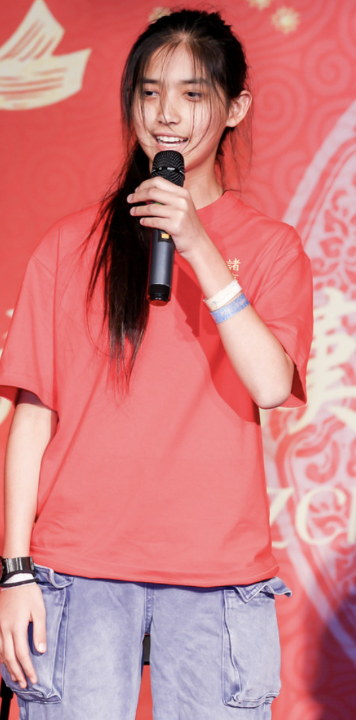
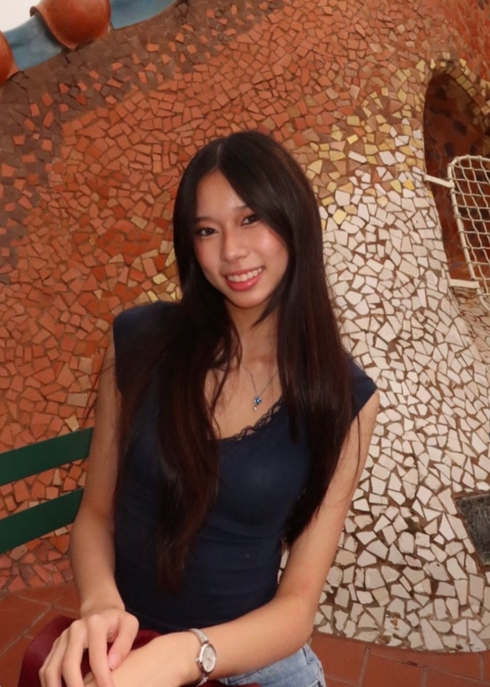
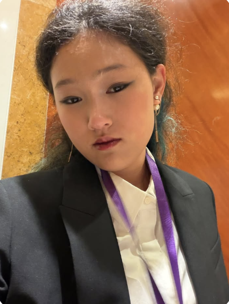

Hi everyone! My name is Shi Qi Ooi, founder of Sensory Smiles. I am
a Y11 student in CISHK and I firmly believe in the importance of
relieving sensory distress and providing calm and comfort for all.
Since I was a child, I always had a love for toys and felt the need
to fidget with something, so Sensory Smiles is my way of bridging
these two characteristics and ensuring access for all. Beyond
excited to see where this goes and excited to create more lasting
change!

Chapter Lead
Meet Celine
I’m Celine, a sophomore at Middlesex School. I like going on walks,
socializing and playing music. I joined SS because I want to help
foster a community that celebrates inclusivity and diversity, and I
want to take initiative in helping people in need.

Chapter Lead
Meet Megan
I’m Megan, a freshman at Deerfield Academy. I enjoy playing squash,
soccer, and doing arts and crafts in my free time. I joined Sensory
Smiles as a chapter lead in the United States branch. I am a
boarding student from Hong Kong and I have experience in social
media marketing across boarders, designing, organising and leading
a team. Ultimately, I enjoy helping out the community by using my
strengths and I look forward to future projects that I will pursue
in Sensory Smiles!!

Social Media Manager
Meet Alison
Hey, it’s me, it’s Alison! I’m a Y11 student from Chinese
International School and I joined Sensory Smiles this year. I'm
passionate about dance and promoting well-being amongst all ages.
My previous experience includes social media marketing for FoodSave,
content creation on Pinterest which garnered total impressions of
over 5 million, and acting as a layout designer for the school
yearbook committee. I'm looking forward to bringing my expertise to
the social media team of Sensory Smiles and to making a positive
impact!

Social Media Manager
Meet Amberlie
I’m Amberlie, a Y11 student in CIS. I love playing guitar, media
design and volunteering. I joined SS because I love being able to
help out local communities!
Social Media Manager
Meet Chloe
Hi, I’m Chloe Zhu, and I am a Y11 student at CISHK and a social
media manager at Sensory Smiles. I joined in 2026 January, and my
hobbies are service and watersports. I have experiences in legal,
political and philosophical fields, including internships in the
Legislative Council, social media management for personal content
creators, and internships at other NGOs. I am looking forward to
making an impact at SS.

Social Media Manager
Meet Ellie
Hi! I’m Ellie, and I’m a social media manager of Sensory Smiles. I
enjoy designing and baking, and I joined in 2025. I hosted a
200-cookie bake sale alongside Shi Qi (auctioned a MEGA cookie for
1000!) and fundraised a total of ~2000 HKD to kickstart the
manufacturing of the Sensory Smiles toys. I’m excited to hop on the
journey of bringing sensory relaxation and comfort to the local
communities.

Coder & Designer
Meet Jennifer
Hello! I’m Jennifer Yam, a current Y11 student at CISHK. I serve as
a coder and designer for Sensory Smiles with aims of being able to
provide a sense of comfort and safety to all children. Some hobbies
of mine include 3D modelling, dancing, and I hope to further develop
my skills in programming as well. I look forward to serving Sensory
Smiles whole-heartedly and giving back to my community!

Coder & Designer
Meet Samira
Greetings! My name is Samira and I am a Y11 student at CIS! I enjoy
coding, modeling, animating, and the sort (although Sensory Smiles
only requires the first skill lol…). I joined in 2026 because I
thought it sounded cool and the founder, Shi Qi, is one of my Top 3
roommates. Outside of Sensory Smiles I am a Roblox game developer
(Play Podesken! (still in early access though)) and I also like
producing music.

Designer
Meet Dora
I'm Dora, a Y11 student studying at CIS. In my spare time, I love
reading, making art, and hanging out with my friends. I joined SS
because it aligns with both my interest in design and my values as
a person, so I'd like to help out in ways I can.

Designer
Meet Monica
Hi, I’m Monica, a Y11 student at CIS. I’m a designer at Sensory
Smiles. I joined in 2026 because I’m passionate about advocating for
the Neurodivergent community. As a neurodivergent student myself, I
understand the support that sensory toys can provide for the
neurodiverse community and hope to make a positive impact with
Sensory Smiles.

Designer
Meet Nicola
Hello! I'm Nicola Chan, currently a Y11 student who joined Sensory
Smiles as a designer in 2026. In my free time I enjoy hanging out
with friends and reading. My experience in this field includes
practice with designing, done through digital platforms like
Procreate which aligns with my interest in architecture and design.
I look forward to expanding my interest through Sensory Smiles!
Designer
Meet Sophie
Hi I’m Sophie, a Y11 student from Renaissance College. I love
drawing, designing and listening to music in my free time. I’ve done
multiple design roles, fashion designing, and marketing. I’m so
excited to work with the Sensory Smiles team!